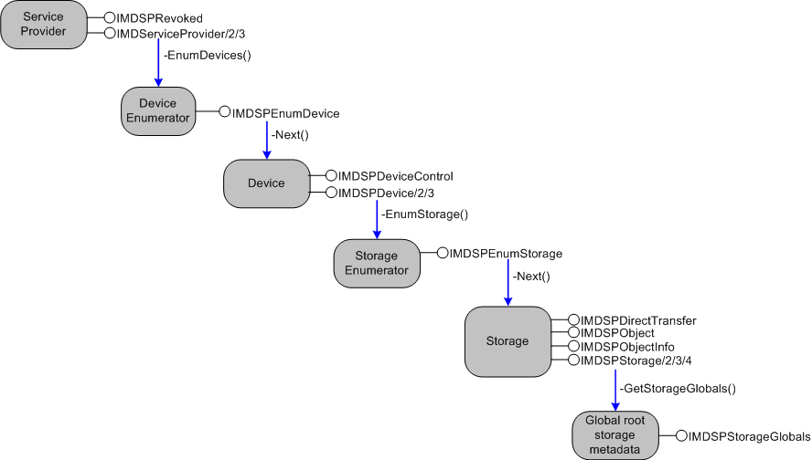

title: Interfaces for Service Providers description: Interfaces for Service Providers ms.assetid: bd61c5fa-047c-4d93-bae1-f3433696b95b keywords:
This section describes interfaces implemented by Windows Media Device Manager service providers. Service providers perform most of the actual work of communicating with a device, because they implement most of the Windows Media Device Manager SDK methods called by the application.
Service providers do not need to implement all of the interfaces listed in this section. For example, a media device that does not have on-board storage does not implement the interfaces that are used to control or expose content. Whether a method or interface is required is indicated on the appropriate reference page.
| Interface or class | Description |
|---|---|
| CSecureChannelServer | A helper class that enables a service provider or secure content provider to authenticate an application and create MAC signatures for secure parameters. |
| IMDServiceProvider | Provides the client (usually Windows Media Device Manager) with a device enumerator for the devices that this service provider supports. |
| IMDServiceProvider2 | Extends IMDServiceProvider by providing a method for creating the device by using the device path. |
| IMDServiceProvider3 | Extends IMDServiceProvider2 by providing a method for setting the device enumeration preferences. |
| IMDSPDevice | Provides an instance-based association with a media device. Using this interface, the client can enumerate the storage media enumerators for the device, get information about the device, and send opaque (pass-through) commands to the device. |
| IMDSPDevice2 | Extends IMDSPDevice by providing methods for getting extended video formats, getting Plug and Play (PnP) device names, enabling the use of property pages, and making it possible to get a pointer to a storage medium from its name. This interface is optional for the service provider but is recommended. |
| IMDSPDevice3 | Extends IMDSPDevice2 by providing ability to query properties and capabilities of the device with regard to an object format. |
| IMDSPDeviceControl | Provides methods for controlling devices. |
| IMDSPDirectTransfer | Enables Windows Media Device Manager to delegate content transfer to the service provider. In this case Windows Media Device Manager does not do any processing of the content before sending it to the service provider. The service provider gets full control of the source. |
| IMDSPEnumDevice | Enumerates the media devices supported by this service provider. |
| IMDSPEnumStorage | Enumerates the storage media on a device and the contents on a storage medium. |
| IMDSPObject | Contains methods for data transfer operations on a storage object. |
| IMDSPObject2 | Extends IMDSPObject by providing more efficient transmission of DRM-enabled data. |
| IMDSPObjectInfo | Sets or gets play length, play position, play offset, or total length of playable objects on a storage medium. |
| IMDSPRevoked | Retrieves the URL from which updated components can be downloaded. |
| IMDSPStorage | Provides an instanced-based association with a storage medium on a device. This interface creates storage objects, retrieves information about them, and provides access to the IMDSPEnumStorage interface for enumerating subfolders nested within the current storage. |
| IMDSPStorage2 | Extends IMDSPStorage by getting and setting extended attributes and making it possible to get a pointer to storage from its name. |
| IMDSPStorage3 | Extends IMDSPStorage2 by supporting metadata. |
| IMDSPStorage4 | Extends IMDSPStorage3 by supporting playlist objects. |
| IMDSPStorageGlobals | Retrieves global information about a storage medium, such as the amount of free space and the total number of files. |
Â
The following diagram shows how to get the various interfaces implemented by a service provider. In this diagram, derived interfaces are displayed in the same tag for compactness, so IMDServiceProvider/2/3 would represent three interfaces: IMDServiceProvider, IMDServiceProvider2, and IMDServiceProvider3. Methods shown are extended by only one of these interfaces. Derived interfaces are obtained by calling QueryInterface on the base interface of the created object.

Windows Media DRM-Implemented Interfaces
Â
Â